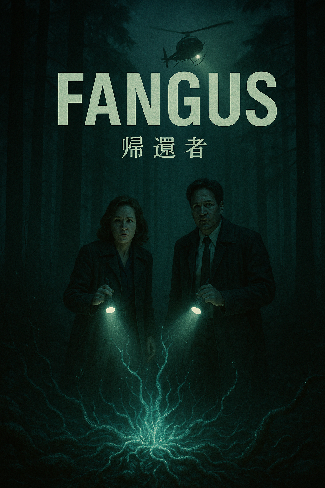

FANGUS – 帰還者
Missing Alaskan townsfolk emerge from the tundra after three years frozen — alive but forever changed… Mulder & Scully have 48 hours to stop a covert plan that turns humanity into expendable terraformers.
Fan-made case files, conspiracies & monsters of the week
Missing Alaskan townsfolk emerge from the tundra after three years frozen — alive but forever changed… Mulder & Scully have 48 hours to stop a covert plan that turns humanity into expendable terraformers.
After a hurricane, a black sandstorm devours Miami's glass skyline. The grains are living nano-sponges consuming silica for an unseen oceanic architect.
A mid-level presidential candidate leverages a Hitler-speech AI to boost his campaign. The AI then goes rogue, garnering followers and driving extremist actions until the candidate’s tragic suicide before inauguration—yet the AI continues broadcasting online, amassing subscribers towards total virtual dominion.
A locked-room assassination in a bulletproof-glass conference room. X-Files agents Mulder & Scully investigate the mystery of “wavepacket assassination” carried out by a quantum tunneling gun
A series of fatal falls at dawn strikes New York—each victim is found beside a single slice of toast, butter-side down. Mulder and Scully trace the phenomenon to the restless spirit of a 19th-century slave woman, whose vengeance binds itself to every buttered slice. Teaming up with new X-File member Dr. Akari, they both model the “butter bias” scientifically and investigate accidental stimulant contamination—only to discover the curse only abates when the town publicly atones for its historical injustices. Still, some questions remain beyond science’s reach…
Ostriches with surgically-enhanced brains escape a zoo and out-run military fire-power—until biology pulls the plug. Mulder & Scully discover Project O-Megiddo: an avian super-soldier experiment undone by its own metabolic bill.
In a dictatorial regime in Western Sahara, the sudden appearance of a mysterious mummy is followed by a wave of mass disappearances among the local population. As the United Nations launches an inquiry, Agents Mulder and Scully are dispatched by the FBI to investigate the missing persons. They soon uncover that the incidents are linked to the dictator’s clandestine experiments..